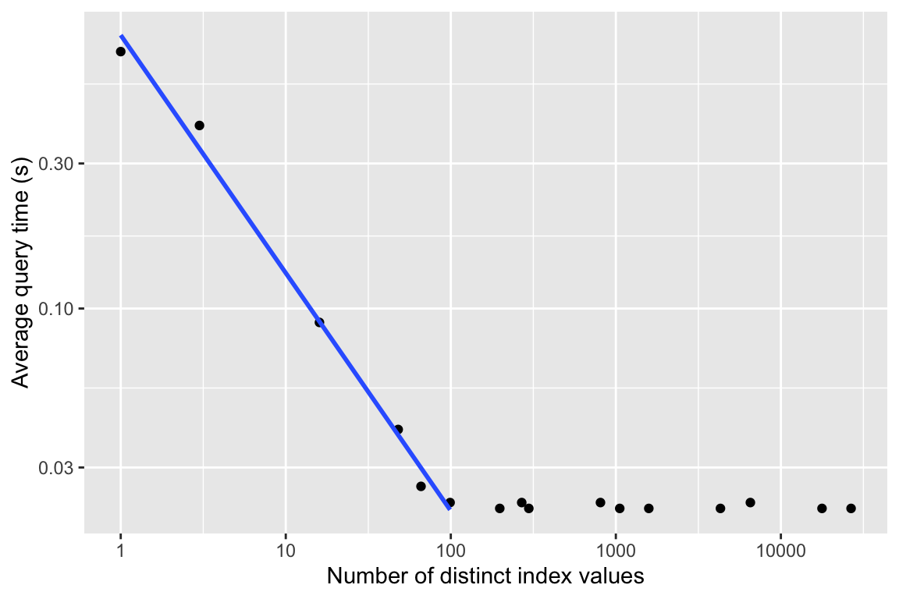

| index | average_time | num_distinct_values |
|---|---|---|
| none | 0.700 | 1 |
| Site | 0.090 | 16 |
| Species | 0.023 | 99 |
| Year | 0.026 | 66 |
| Observer | 0.023 | 269 |
| ageMethod | 0.400 | 3 |
| Site,Species | 0.022 | 1584 |
| Site,Year | 0.022 | 1056 |
| Site,Observer | 0.022 | 4304 |
| Site,ageMethod | 0.040 | 48 |
| Species,Year | 0.023 | 6534 |
| Species,Observer | 0.022 | 26631 |
| Species,ageMethod | 0.022 | 297 |
| Year,Observer | 0.022 | 17754 |
| Year,ageMethod | 0.022 | 198 |
| Observer,ageMethod | 0.023 | 807 |
Week 9 - Instructor notes
Concurrency demonstration
| Files |
|---|
| concurrency.db |
| concurrency.sql |
| experiment.sh |
| worker.py |
No matching items
The above files, which can be downloaded in toto as concurrency.zip, can be used to demonstrate the necessity of using transactions and locking to avoid race conditions. concurrency.db is an SQLite database created by running the commands in concurrency.sql. It contains a single value \(V\) in a single row in a single table.
worker.py is a Python program that adds a specified delta value to \(V\) a specified number of times. For example, python worker.py 500 1 adds 1 to \(V\) 500 times. By default it does no locking at all, but if a wt (“with transactions”) argument is added, as in python worker.py 500 1 wt, it wraps each update in a transaction.
experiment.sh is a Bash script that resets \(V\) to 0, runs two instances of worker.py concurrently, one adding +1 to \(V\) 500 times and the other adding -1 to \(V\) 500 times, and then prints the final value of \(V\). By default it does no locking, but as with worker.py, if it is run with a wt argument then transactions and locking are employed. With no race conditions the final value of \(V\) will of course be 0, but if race conditions occur, \(V\) will likely have a random nonzero value.
The database configuration, the connection details, and the timing delays have all been designed to make race conditions very likely to occur. (It is suprisingly difficult to get race conditions to occur due to SQLite’s default locking and due to artifacts of operating system timeslicing.) This experimental setup has been tested on MacOS, Windows, and several Unix platforms and consistently yields the desired result. Here’s an example run without transactions:
% ./experiment.sh
value = 14
% ./experiment.sh
value = 15
% ./experiment.sh
value = -2And adding transactions and locking:
% ./experiment.sh wt
value = 0
% ./experiment.sh wt
value = 0
% ./experiment.sh wt
value = 0It should take less than 60 seconds to run an experiment.
Index demonstration and homework
| Files |
|---|
| build-big-db.sql |
| generate-rows |
| index-timer |
| query.sql |
| sample-output.csv |
No matching items
The above files, which can be downloaded in toto as indexes.zip, create a large SQLite database to be used for the homework assignment. The database is essentially the same as has been used throughout the course to date, but contains a Bird_nests table having 1 million rows. The rows are valid (i.e., satisfy all table constraints) but have randomly generated values. The rows are also padded so that the database size is inflated to 4GB.
query.sql is a query that returns exactly one row from this enlarged Bird_nests table. The design is such that placing indexes on different column(s) of the table will result in markedly different performance improvements. Furthermore, query performance can be seen to have a clear relationship to index cardinality.
To build the database, create a copy of the database from week 7 and then run build-big-db.sql on it as shown below. The SQL script internally invokes the generate-rows Python script.
cp .../week7/database.db db/database-long-wide.db
sqlite3 -init build-big-db.sql db/database-long-wide.dbindex-timer is a Bash script that is essentially what the homework problem asks the students to use, and what the students should have developed in assignment Week 5 - Create a test harness. Running experiments as described in the homework problem should produce data resembling the following:
Which, when plotted, reveals a clear relationship:
